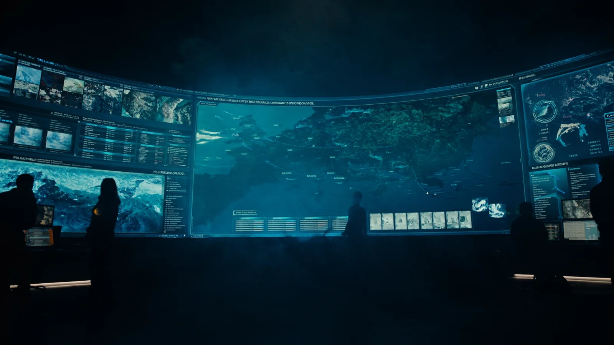

บทนี้สังเคราะห์รูปแบบฉบับสมบูรณ์ — ระบบบูรณาการเฝ้าระวังและป้องกันโครงสร้างพื้นฐานใต้น้ำ (The Shield 3.0) ที่ยกระดับ UDC Defense Simulator จาก v3 สู่ v17 เพื่ออุดช่องว่าง ๓ ด้านที่ค้นพบในบทที่ ๓ — กฎหมาย · การตระหนักรู้ใต้น้ำ · การบูรณาการ — แล้วนำเสนอผลการวิเคราะห์ที่ตอบวัตถุประสงค์การวิจัยทั้ง ๓ ข้อ ผ่านการจัดกำลังพหุมิติ ๖ มิติตามกรอบ 5W1H ภายใต้กลไก ศรชล.

บทที่ ๒ สังเคราะห์กรอบแนวคิดเชิงทฤษฎี The Shield 1.0 · บทที่ ๓ พัฒนาเป็นโมเดลที่นำเสนอ The Shield 2.0 ผูกกับพื้นที่ทิศตะวันออกของเกาะคราม พร้อมตรวจสอบจนพบช่องว่างที่มีนัยสำคัญ ๓ ประการ บทนี้จึงนำเสนอรูปแบบฉบับสมบูรณ์ The Shield 3.0 เป็นลำดับแรก แล้วนำเสนอผลการวิเคราะห์สภาพแวดล้อม ภัยคุกคาม รูปแบบการคุ้มครอง และบทบาทของกองทัพเรือที่สนับสนุนรูปแบบดังกล่าว
ยังไม่มีกฎหมายเฉพาะคุ้มครอง โครงสร้างพื้นฐานใต้น้ำที่สำคัญ (CUI) รองรับการจัดระเบียบพื้นที่และกฎการปฏิบัติรายเขต
ขาดเซนเซอร์ใต้น้ำและการหลอมรวมข้อมูล ที่จะมองเห็นภัยพื้นทะเลซึ่งตรวจจับได้ยากที่สุด
ขาดเจ้าภาพและกลไกบังคับเปิดข้อมูลระหว่างหน่วยงาน ที่จะหลอมภาพสถานการณ์ทางทะเลให้เป็นหนึ่งเดียว
วิเคราะห์ข้อจำกัดของโครงสร้างพื้นฐานดิจิทัลภาครัฐปัจจุบัน ความเหมาะสมเชิงภูมิศาสตร์ และภัยคุกคามต่อ UDC ในอ่าวไทย → หัวข้อ ๔.๓
วิเคราะห์การจัดระเบียบพื้นที่ทางทะเล (MSP) และขีดความสามารถปฏิบัติการใต้น้ำที่เหมาะสมของกองทัพเรือ → หัวข้อ ๔.๔
เสนอแนวทางกำหนดบทบาทและการบริหารจัดการพื้นที่ทางทะเลภายใต้กลไก ศรชล. → หัวข้อ ๔.๕
The Shield 3.0 พัฒนาต่อยอดจาก 2.0 โดยยกระดับจากการตรวจจับและตอบโต้การบุกรุกโดยลำพัง ไปสู่ระบบรับมือสงครามพื้นทะเลในลักษณะพื้นที่สีเทาและการประสานความร่วมมือระดับภูมิภาค โปรแกรมจำลอง UDC Defense Simulator จึงเปลี่ยนคำถามหลักจากรุ่น v3 สู่ v17
เน้นจำลองการทำงานของเซนเซอร์ตรวจจับ และการตอบโต้การบุกรุกศูนย์ข้อมูลใต้น้ำของไทยโดยลำพัง
ยกระดับสู่ระบบบูรณาการ — หลอมรวมข่าวกรองพื้นที่สีเทา จำแนกเจตนา ซ้อนชั้นเขตอำนาจตามกฎหมาย และประสานความร่วมมือหลายหน่วย
โปรแกรมออกแบบเป็นแผนที่ยุทธการแบบโต้ตอบเป็นศูนย์กลาง มีแผงควบคุมล้อมรอบสำหรับเปิด-ปิดชั้นข้อมูลและสั่งการจำลองแบบเรียลไทม์ โครงสร้างภายในแบ่งเป็น ๖ กลุ่มฟังก์ชันที่ทำงานประสานกัน
ที่ตั้ง UDC แนววางสายเคเบิล ความลึกพื้นท้องทะเล (Bathymetry) และสัญลักษณ์การเดินเรือบนแผนที่จริง
จำลองสมการโซนาร์ ความเร็วเสียงในน้ำ และเงื่อนไขการแพร่เสียง เพื่อประเมินระยะตรวจจับตามสภาพน้ำตื้นอ่าวไทย
วางกำลังเรือผิวน้ำ เฮลิคอปเตอร์ปราบเรือดำน้ำ ข่ายเซนเซอร์พื้นทะเล (Seabed Sentry) ระบบตอบโต้ใต้น้ำ ทุ่นระเบิดควบคุม และ UNDEX
แสดงภาพสถานการณ์ทางทะเลที่จำแนกแล้ว (RMP) จัดประเภทเป้าหมาย เชื่อมกับการวิเคราะห์พฤติกรรมและเจตนา
ควบคุมการเดินเวลาสถานการณ์ การสลับธีม/การจัดวางแผง และลำดับการสาธิตอัตโนมัติสำหรับการนำเสนอ
บูรณาการข้อมูลเรียลไทม์ภายนอก — อากาศ ภัยพิบัติ อวกาศ ข้อมูลข่าวสาร — เข้าประกอบภาพสถานการณ์
การปฏิบัติดำเนินไปตามห่วงโซ่ที่ไล่ระดับตามเขต (เขตหวงห้ามเด็ดขาด → เขตควบคุม/กันชน) และแบ่งมอบความรับผิดชอบตามมิติ ภายใต้การกำกับของทัพเรือภาคที่ ๑ · ศปก.ทร. · ศรชล.
ชั้น ๑ เขตปลอดภัยในราชการทหาร · ชั้น ๒ ผลักดันกฎหมายเฉพาะคุ้มครอง CUI พร้อมจัดทำการคุ้มครองเป็นลำดับชั้น (แผนป้องกัน/รักษาความปลอดภัยเป็นแผนแม่ + แผนเผชิญเหตุรายเขต)
บูรณาการ DAS · ข่ายโซนาร์รับเสียง · UUV เข้ากับการหลอมรวมข่าวกรองพื้นที่สีเทาและแฟ้มพิสูจน์ทราบ (Attribution Casefile)
จัดตั้งศูนย์รวมข้อมูลร่วมภายใต้ ศรชล. · แผนคุ้มครอง CUI ระดับชาติ · และการแบ่งปันภาพสถานการณ์ทางทะเลร่วมระดับภูมิภาค
| ด้านการพัฒนา | The Shield 2.0 · v3 | The Shield 3.0 · v17 |
|---|---|---|
| มิติการป้องกัน (Domain) | พหุมิติ ๔ ส่วนหลัก ภายใต้การควบคุมสั่งการรวมศูนย์ (อากาศ+ผิวน้ำ / ใต้น้ำ / พื้นท้องทะเล / ชายฝั่ง) | แยกเป็น ๖ มิติชัดเจน (อากาศ · ผิวน้ำ · ใต้น้ำ · พื้นท้องทะเล · ชายฝั่ง · ไซเบอร์) เพิ่มชั้นวิเคราะห์พฤติกรรมและเจตนา และการควบคุมสั่งการรวมศูนย์ (C2) |
| การตรวจจับ : เซนเซอร์เรียลไทม์จากหน่วยงาน | AIS และเรดาร์ตรวจการณ์ชายฝั่งเป็นหลัก | หลอมรวม ๗ แหล่ง : AIS (กรมเจ้าท่า/SeaVision) · ADS-B (วิทยุการบินฯ) · อากาศ/คลื่นลม (กรมอุตุฯ) · แผ่นดินไหว · น้ำขึ้นน้ำลง (อศ.) · ภาพดาวเทียม SAR (GISTDA) · พยากรณ์ประสิทธิภาพโซนาร์ (Tier 2) |
| การตรวจจับ : เซนเซอร์ยุทโธปกรณ์ (ข้อเสนอ) | DAS และโซนาร์พื้นฐาน | ชุดเซนเซอร์ทหาร ๗ รายการ : DAS · Passive Sonar/Hydrophone · UUV ลาดตระเวน · ชุดต่อต้านอากาศยานไร้คนขับ (RF/EO-IR/อะคูสติก) · เรือสำรวจ Multi-beam/Side-scan + Magnetometer · ROV · เฮลิคอปเตอร์ปราบเรือดำน้ำพร้อมทุ่นโซนาร์ |
| การหลอมรวมข่าวกรอง | ตรวจจับและแจ้งเตือนการบุกรุก | ยกระดับสู่ Intel Fusion พื้นที่สีเทา · วิเคราะห์พฤติกรรมและเจตนา (ลากสมอ · วนเวียน · ปิดสัญญาณ AIS · ความผิดปกติ GNSS) · จัดทำแฟ้มพิสูจน์ทราบ |
| การจัดระเบียบพื้นที่ & กฎหมาย | MEZ + เขตกันชน ร่วมกับ TSS ในเชิงพื้นที่ | เสริมฐานกฎหมาย : ชั้น ๑ เขตปลอดภัยในราชการทหาร · ชั้น ๒ กฎหมายเฉพาะคุ้มครอง CUI · กฎการปฏิบัติรายเขต · แผนคุ้มครองเป็นลำดับชั้น |
| การบูรณาการ & ความร่วมมือ | บูรณาการกำลัง ทร. และ ศรชล. ภายในประเทศ | ศูนย์รวมข้อมูลร่วม · แผน CUI ระดับชาติ · Shared-MDA ระดับภูมิภาค (IFC สิงคโปร์ / SINGSIAM) · ยกเป็นหลักนิยมร่วม + ดึง สดช./สพร. · NCW + National TDL · One Marine Chart (MSDI/IHO) · ม.๒๗ → นปท. → ๑๗ กระทรวงเปิด API + PaaS |
| การใช้กำลัง & การตอบสนอง | สกัดกั้นและตอบโต้ภัยคุกคาม | จัดการห่วงโซ่การปฏิบัติอย่างรับผิดชอบ (Deconfliction/Abort) · การลาดตระเวนถาวร · การต่อต้านทุ่นระเบิด (MCM) |
| บริบทเปรียบเทียบ | จำลองเฉพาะพื้นที่ทิศตะวันออกของเกาะคราม | เพิ่มบริบทเปรียบเทียบ UDC ระดับสากล (จีน Hainan / สิงคโปร์ Keppel) |
เพื่อให้ The Shield 3.0 นำไปปฏิบัติได้จริง ผู้วิจัยแจกแจงการปฏิบัติการ ๖ มิติด้วยกรอบ 5W1H (ตารางที่ ๔-๒) โดยมิติในความรับผิดชอบโดยตรงของกองทัพเรือระบุหน่วยรับผิดชอบหลัก ส่วนหน่วยงานนอก ทร. จำแนกเป็น ในกลไก ศรชล. และ นอกกลไก ศรชล. — ขอรับการสนับสนุน
ตอบวัตถุประสงค์การวิจัยข้อที่ ๑ — นำผลการวิเคราะห์สภาพแวดล้อมเชิงยุทธศาสตร์ (PMESII) และข้อค้นพบจากการสัมภาษณ์ในบทที่ ๓ มาสังเคราะห์เป็น ๓ ประเด็นหลัก
ระบบคลาวด์กลางภาครัฐ (GDCC) ปัจจุบันตั้งบนบก เผชิญข้อจำกัดพลังงานและทรัพยากรน้ำสูง เปราะบางต่อภัยพิบัติและภัยกายภาพ และเสี่ยงด้านอธิปไตยทางข้อมูล → จึงต้องพัฒนา UDC เป็น GDCC Secure Edge สำหรับข้อมูลชั้นความลับสูง
ทิศตะวันออกเกาะครามเหมาะสมสูงสุด — ลึก ๓๐–๔๔ ม. ในเกณฑ์สากล · พื้นทรายปนโคลนเสถียร · สัณฐานเกาะเป็นเกราะกำบังธรรมชาติ · มี นย. คุ้มครองทันท่วงที · อยู่ในเขตปลอดภัยทหารและนอกร่อง TSS
สงครามพื้นทะเล โดย SDV · Midget · UUV · การลากสมอตัดสายเคเบิล · เรือปิดสัญญาณ (Dark Vessels) และภัยไซเบอร์-กายภาพ
สภาพน้ำตื้นของอ่าวไทยเป็นอุปสรรคทางอะคูสติกต่อเรือดำน้ำขนาดใหญ่ ภัยหลักที่แท้จริงต่อ UDC จึงเป็นยานขนาดเล็ก การลากสมอเรือ และการปฏิบัติการพื้นที่สีเทา — ไม่ใช่เรือดำน้ำขนาดใหญ่ การออกแบบระบบป้องกันจึงต้องเน้นการตรวจจับเป้าหมายเล็กและการพิสูจน์เจตนา มากกว่าการรับมือภัยเรือดำน้ำตามแบบ
ตอบวัตถุประสงค์การวิจัยข้อที่ ๒ — ประยุกต์การจัดระเบียบพื้นที่ทางทะเล (MSP) และบูรณาการขีดความสามารถปฏิบัติการของกองทัพเรือเป็น ๒ ประเด็นหลัก
ดำเนินการคุ้มครองพหุมิติครอบคลุม ๖ มิติ (รายละเอียดหน่วยรับผิดชอบและการปฏิบัติตามกรอบ 5W1H อยู่ใน ตารางที่ ๔-๒) แบ่งมอบความรับผิดชอบตามขีดความสามารถเฉพาะ และเชื่อมโยงทุกมิติแบบเวลาจริงผ่านระบบสงครามที่ใช้เครือข่ายเป็นศูนย์กลาง (NCW) และระบบเชื่อมโยงข้อมูลทางยุทธวิธี (Data Link) ภายใต้การควบคุมสั่งการรวมศูนย์ เสริมด้วย DAS และเฮลิคอปเตอร์ปราบเรือดำน้ำจากสนามบินอู่ตะเภา
ตอบวัตถุประสงค์การวิจัยข้อที่ ๓ — กองทัพเรือทำหน้าที่เป็นแกนปฏิบัติการในการคุ้มครอง CUI ภายใต้กลไก ศรชล. ตาม พ.ร.บ.การรักษาผลประโยชน์ของชาติทางทะเล พ.ศ.๒๕๖๒
กองทัพเรือคือแกนปฏิบัติการที่นำขีดความสามารถพหุมิติมาคุ้มครอง CUI โดยใช้กลไก ศรชล. เป็นเจ้าภาพบูรณาการ และใช้อำนาจตาม ม.๒๗ เป็นกลไกบังคับเปิดข้อมูล — ครบทั้งกำลัง กฎหมาย และการประสานหน่วยงาน อันเป็นการอุดช่องว่างด้านการบูรณาการให้สมบูรณ์
โมเดล The Shield ได้รับการพัฒนาอย่างเป็นลำดับจากกรอบแนวคิดขั้นต้น (1.0) ในบทที่ ๒ สู่โมเดลที่นำเสนอผูกพื้นที่จริง (2.0) ในบทที่ ๓ และสังเคราะห์เป็นระบบบูรณาการเฝ้าระวังและป้องกันโครงสร้างพื้นฐานใต้น้ำ (The Shield 3.0) ในบทนี้
The Shield 3.0 ปิดช่องว่างครบทั้ง ๓ ด้าน — กฎหมาย · การตระหนักรู้สถานการณ์ใต้น้ำ · การบูรณาการระหว่างหน่วยงาน — เป็นรูปแบบที่สามารถนำไปปฏิบัติได้จริง ผ่านการจัดกำลังพหุมิติ ๖ มิติตามกรอบ 5W1H ภายใต้กลไก ศรชล. ส่วนสรุปผลการวิจัยและข้อเสนอแนะเชิงนโยบายจะนำเสนอในบทที่ ๕ ต่อไป